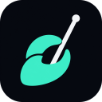

Approve this device
Home gateway has not seen this device before. Approve it once on the gateway's machine and Clawtrate connects by itself.
openclaw devices approve 5d2a90c4
Waiting for approval
- Read bots, tasks and conversations
Request 5d2a90c4 · this device a41c9e02